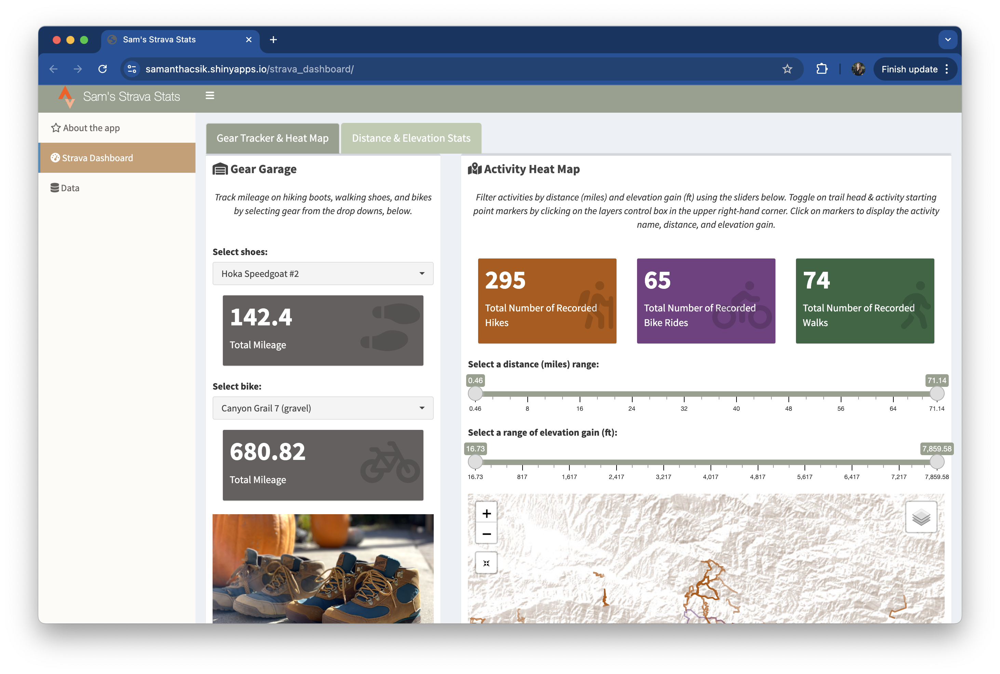
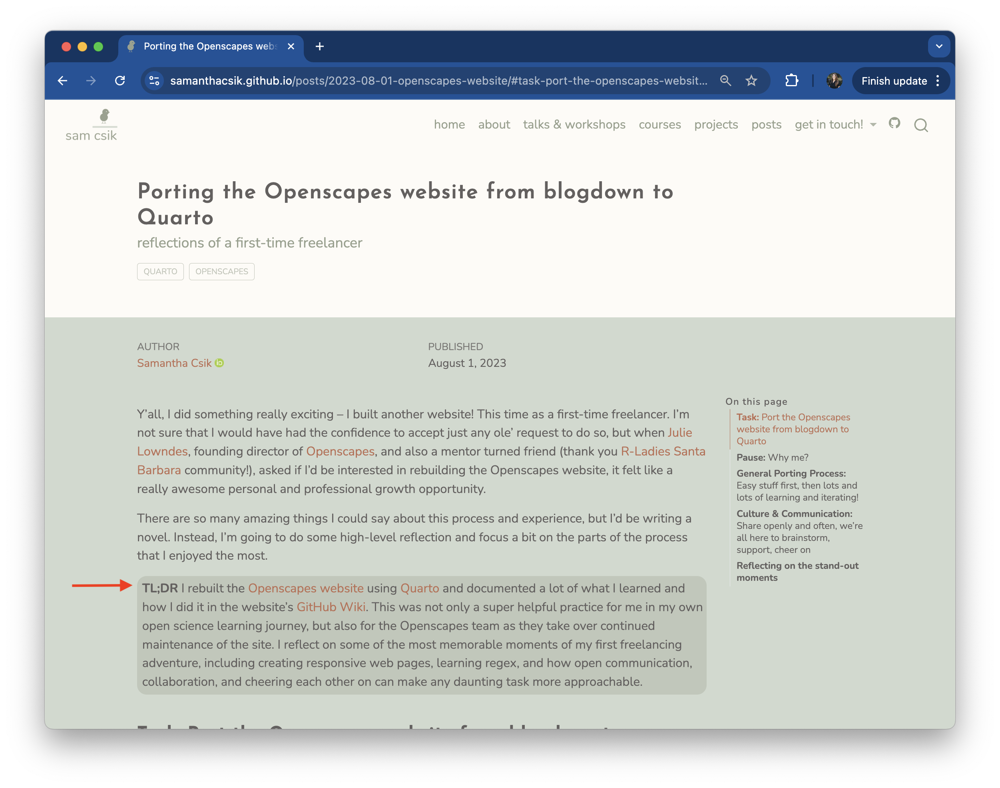

Raise your hand if you enjoy writing (you can be honest)
EDS 296: Data Science Portfolios
Blogging for data science
October 25th, 2024
Raise your hand if you’ve ever blogged
Raise your hand if you’ve ever felt like this:
Same . . .
Blogging . . . in a data science program??
It’s actually quite popular!
And I cannot overstate just how much my learning journey benefits from reading personal data science blogs. Just a few reasons:
- oftentimes shorter and / or more approachable than book chapters or documentation
- a versatile medium that can incorporate storytelling, humor, and non-traditional media (e.g. gifs, memes, videos, etc.) – things that make the author relatable!
- posts on niche topics or approaches that I haven’t always found clear documentation for elsewhere
- networking / getting to know active participants in the data science world
Your blog can draw viewers to your website
A screenshot from my Google Analytics dashboard. My most highly-visited page is consistently this blog post.
Drive engagement by promoting your posts
A screenshot from my Google Analytics dashboard. Views peaked when I shared my blog post on LinkedIn.
Writing (in any form) can feel intimidating . . .
. . . but I hope that after today and over the next ~7 months, you’ll find blogging to be:
- a creative and flexible outlet
- a motivator for learning new skills
- a way to reflect on your work / find closure after a large effort
- a fun way to showcase / market your technical skills (both programming and writing)
Data science blogging can (and should) be more than just the code you’ve written or the tool you’ve learned – this is what we’ll (primarily) focus on today.
Okay, where do we actually start?
There’s no single formula, but here are some steps you might consider taking to help you craft not only informative, but also engaging blog posts:
Find your topic
Craft your story
Add embellishments
Write it / get feedback / revise / publish
Find your topic
Find your topic
Sometimes, the topic will be chosen for you (e.g. MEDS course assignments)
Other times, you’ll have full creative freedom on what to blog about
If that feels intimidating, that’s okay! Lean on your personal brand for some guidance
EXAMPLE: Sam’s branding guide
I’ll put myself in the hot seat first! Here’s my branding guide for reference.
Approachable · Educational · Spirited · Resolute
Learners · Educators · (Potential Employers)
- I’m a passionate data science educator interested in creative and inclusive pedagogical approaches
- I love learning and I’m most productive when I surround myself with supportive communities. I value contributing back to those communities by sharing open source educational materials and participating in my local data science communities.
- I don’t want to only be defined by my work! Spending time outdoors – particularly hiking – is where I find a lot of joy.
EXAMPLE: Sam’s post ideas (1/4)
Automating shiny app data updates using my Strava dashboard as a case study
- combines my personal and professional interests
- builds off existing projects (my Strava dashboard)
- a learning opportunity (Amazon S3 for data storage, GitHub Actions for automation)
- something I could also potentially bring into MEDS teaching materials (multipurpose!)

My Strava dashboard, a personal project where I use my hiking data to learn about building {shiny} dashboards
EXAMPLE: Sam’s post ideas (2/4)
Using the Quarto closeread extension for creating scrollytelling articles (example / tutorial)
- something I’d like to learn / bring into EDS 240 (again, multipurpose!)
- it’s new! (shows that I try to stay up-to-date)
EXAMPLE: Sam’s post ideas (3/4)
Combatting imposter syndrome as a data science educator
- relatable for (I think) lots of learners and educators
- something that’s often on the mind
Image Source: Johns Hopkins
EXAMPLE: Sam’s post ideas (4/4)
Reflecting on three years of ES x MEDS Hack2O
- I really enjoy reflecting on teaching experiences
- focuses on community-building around data science education
- no Hack2O this year, so it feels fitting to spend some time that would have been used for planning on reflecting

YOUR TURN
Share with your partner:
- your personal brand adjectives, target audience(s), and key messages
- two different brainstormed blog post topics, and how they fit your brand
- which of your topic ideas you’d like to pursue, and why
After listening to your partner, share:
- what excites you about their chosen topic
- if there are variations / angles your partner might consider taking to better fit their brand
- any other initial, constructive thoughts you might have
I’ll reset the timer when you and your partner should switch roles!
04:00
Craft your story
Craft your story
Storytelling is a powerful mechanism for effective (data) science communication
Communicating via stories has been found to:
- Increase likelihood of people remembering information
- Reduce disbelief and counter-arguing
- Make people feel the experience as if it was their own
- Be much more convincing than just data or code
- Increase engagement with a more general audience
Image source: Shutterstock
From Alex Phillips’ ESM 438 course materials (week 2 slides)
One storytelling approach: build tension
Good stories build narrative tension over time with a distinct beginning, middle, and end
Freytag’s Pyramid is just one possible narrative structure. From Alex Phillips’ ESM 438 course materials (week 2 slides)
EXAMPLE: Starwars (A New Hope)
Adapted from Alex Phillips’ ESM 438 course materials (week 2 slides) and this article on Freytag’s Pyramid
EXAMPLE: Starwars (A New Hope)
Adapted from Alex Phillips’ ESM 438 course materials (week 2 slides) and this article on Freytag’s Pyramid
EXAMPLE: Starwars (A New Hope)
Adapted from Alex Phillips’ ESM 438 course materials (week 2 slides) and this article on Freytag’s Pyramid
EXAMPLE: Starwars (A New Hope)
Adapted from Alex Phillips’ ESM 438 course materials (week 2 slides) and this article on Freytag’s Pyramid
EXAMPLE: Starwars (A New Hope)
Adapted from Alex Phillips’ ESM 438 course materials (week 2 slides) and this article on Freytag’s Pyramid
EXAMPLE: Starwars (A New Hope)
Adapted from Alex Phillips’ ESM 438 course materials (week 2 slides) and this article on Freytag’s Pyramid
Storytelling / scene-setting in an intro (and conclusion)
A common approach:
- storytelling / scene-setting in the intro (and maybe conclusion)
- technical instruction / discussion / tutorial-style writing in the body
Of course, there’s no one right way to blog (or storytell for that matter) – don’t let this constrain you
EXAMPLE: My first ever blog post
This storytelling / scene-setting all occurs in the intro / conclusion of my blog post, Why create presentations slides bout blogging when you can just blog about it instead?
No one way to tell a story – there are many narrative structures!
Source: Uniting science and stories: Perspectives on the value of storytelling for communicating science (Green et al. 2018); See additional examples of some of the many other possible narrative structures.
ANOTHER EXAMPLE: Maya Gans
From My First Live Coding Interview, by Maya Gans:
Intro: “Yesterday I interviewed for a position maintaining and creating ShinyApps. To call that a JOB is crazy to me. I love developing reactive web applications, the fact that you can get paid to do that is still mind blowing. I’m realizing that having fun at work is actually a possibility!
That said, the data scientist position usually includes a live coding portion. I went into it trying to treat my first one as practice, but every second I didn’t spend typing spanned an eternity. It was horrifying… but thinking about how to solve these questions was also kind of really fun?
I’m fairly certain I won’t get the job. But I’m also certain it was an experience to learn and grow. The interview was so intense that it was pretty easy to recall the questions almost verbatim. I wanted to explore the questions again on my own with no pressure. And I’d love input on how to answer these more elegantly!“
Conclusion: “I left the interview feeling exhausted and deflated. I found myself asking: if I can’t answer these questions, what am I doing trying to become a data scientist? But now that I’ve spent a day to reflect, the interview was an incredible learning experience. It pinpointed concrete areas where I can grow and I honestly had fun thinking about these problems. I’m not sure I’ll ever perform smoothly under pressure, but at the very least I now have a function to separate duplicates from unique values!”
02:00
Storytell by describing your motivation
A few examples:
“In previous years, when it gets to the end of the year, I’ve written blog posts about reflecting on a year of #TidyTuesday data visualisations, or making your own #RStats Wrapped in the style of SpotifyWrapped. This year, I wanted to reflect on some of the changes I’ve made to the way I write R code that have helped to streamline my workflows.” -Nicola Rennie, in Four ways to streamline your R workflows
“Around 11pm last night I saw this tweet [SCREENSHOT OF TWEET]. Tom’s instinct makes perfect sense. My first thought was “CHICKEN WINGS.” So I spent a couple sleepless hours with this weird (and obviously fake) data set about bird attacks in 1974, because it felt like a good October distraction and an opportunity to get some data wrangling rust off.” -Allison Horst, in 1974…bird attacks?
“Hello and welcome back to my multi-part series about what I like to call slidecrafting; The art of putting together slides that are functional and aesthetically pleasing. I will be using quarto presentations. This is the fifth post, you can find all other posts in the slidecraft 101 project.” -Emil Hvitfeldt, in Slidecraft 101: Layout
YOUR TURN - brainstorm
On your own, begin brainstorming your story. Consider:
- what motivated / inspired you to blog about your chosen topic (e.g. was there a specific incident or catalyst)?
- is there a source of tension (e.g. overcoming a technical or learning challenge)?
- how does your chosen topic relate to your personal and / or professional interests?
- what are your short and long-term learning goals and how does this topic fit within them?
- recall the key messages your wrote in your branding guide – can you tell a story that helps to support those key messages?
- who are you writing for (remember, you define your target audience(s) in your personal branding guide!)?
06:00
YOUR TURN - share
Share your outlined story with your partner.
I’ll reset the timer when you and your partner should switch roles!
03:00
Add embellishments
Embellishments can improve engagement
Once your story framework is scaffolded, adding in one (or more) of the following embellishment types can help you engage your readers:
- Humor
- Hooks
- Metaphors
- Supporting media
Matt Dray and Adriana De Palma’s blog, rostrum.blog is one that often (always?) leverages embellishments to engage their readers. Examples from their post, Base slaps!, on the following slides.
The following slide content is adapted from Alex Phillips’ ESM 438 course materials (week 2 slides), with the added example of Base Slaps!.
1. Humor
To start, the title (Base slaps!) is pretty punny (spoiler, it’s about base R):
And ends with this final closing paragraph:
“But ultimately, I just wanted to do this terrible ‘base slaps’/‘slap bass’ pun, sorry. But also, I hear that zoomers say ‘slaps’ to mean ‘cool’. I think. Oh dear, this was a flimsy premise for a talk. Cringe-driven development?”
- maybe you like reading it, maybe you like writing with it, maybe you like both, maybe you like neither
- should be an authentic extension of you (e.g. if you like sarcasm, go for it!)
- keep it professional
2. Hooks
Good hooks inspire wonder, curiosity, humor, or other connecting emotions.
3/4. Metaphors & Supporting media
Use metaphors to improve connections or visualizations for your audience. And because blog posts are a versatile medium, don’t shy away from including media that helps to demonstrate examples (and importantly, gives your readers a break from a wall of text and code).
“Re stability, vanilla R has changed little over time. Code written a couple of decades ago has a high chance of running now and will (likely) be executable for a long time into the future. As a result, I contend that R is a horseshoe crab (unchanged for aeons, cryptically beautiful).”
“Note that base R is the literal, unyielding base of the teetering tower of packages used by your project (incredible metaphor).”

Both quotes and xkcd adaptation come from the section titled, Content. Find many more metaphors and media throughout the blog post.
YOUR TURN
Discuss with your partner some ways to add embellishments to both of your stories. Consider:
- do you like reading humor? do you like writing with humor? what might that look like for you (if you do choose to use humor)?
- how can you or your partner “hook” readers at the start of your blog posts? or elsewhere in the writing?
- what metaphors might you consider using and how do they help improve understanding of complex topics?
- what media might you want to include?
10:00
Write it / get feedback / revise / publish
Continue drafting & polishing your post
Getting feedback:
- Trade with a friend (even better if you can both give feedback to one another)
- See me at office hours (11/1 & 11/8 from 1:00 - 2:00pm)
Complete and publish your blog posts:
- not a course requirement, but I highly encourage you to do so by end of EDS 296 (week 6) while things are fresh!
- opportunity for Bren to promote blog posts on LinkedIn
- reach out if you want feedback on your completed draft
A few final tips
Include a TL;DR, especially for long posts
TL;DR - internet slang for Too Long; Didn’t Read
Should be a short and succinct summary of your main discussion points. It should not introduce new / additional information.
H/T: Julie Lowndes for recommending using TL;DRs in blog posts! I gave it a shot for the first time in my post, Porting the Openscapes website from blogdown to Quarto.
Use headers to help readers navigate content
Most visitors won’t read your entire blog post, but rather want to jump to the parts that are relevant for them – help them easily navigate by creating clear section headers (e.g. # - ####) and enabling a table of contents.
Set toc: true in either your _quarto.yml file (which would make this the default behavior across all your website pages), or in your blog post’s YAML (which turns on table of contents for just that page). You may also adjust the toc-depth (number of section levels to include; defaults to 3). Screenshot from my blog post, Building (and teaching) a graduate-level data science course
Set the appropriate code chunk options
Your data science blog posts will often include example code. Thoughtfully set your code chunk options so that your examples are easy to follow, but don’t bog down your post by requiring readers to scroll past loonnngggg data frames or messages / warnings (unless there’s an important and demonstrative reason to do so). Consider:
- do you need to show messages / warnings to demonstrate your point? if not, suppress them:
message: false&warning: false - show just the code, but not the output (e.g. loading libraries):
eval: false&echo: true - show just the output (and not code):
eval: true&echo: false
Remember, you can set options in your blog post’s YAML or on a chunk-by-chunk basis.
Consider how you write / display your code
- use logical variable / object names
- include clear, succinct, and nicely structured code annotations, as appropriate (check out the
{ARTofR}package) - consider folding code so that readers can expand / collapse code as needed (set
code-fold: truein your post’s YAML, or on a chunk-by-chunk basis)
Check out Melissa Widas’ (MEDS 2024) post, Relationship between bee behavior and vineyard types in Germany, which demonstrates the above approaches (Melissa also does a great job telling a story in her intro).
Strategically assign categories
We learned last week how to add category tags to individual blog posts. Use these strategically to group related posts. Some ideas / examples:
- MEDS-related posts (e.g. course projects): MEDS-project, grad-school
- Short / unpolished posts: quick-thoughts, raw-reflections, code-bites, short-takes (thanks ChatGPT for these suggestions)
- Posts that use a particular language: R, Python, JavaScript
- Domain-specific categories: data-viz, machine-learning, GIS, databases, statistics, environmental-modeling
Note: To ensure clean URLs, avoid categories with spaces (e.g. rather than MEDS projects, use MEDS-projects)
Embed media
There are a few ways to embed media (screenshots, screen recordings, gifs, images, etc.):
In a code chunk using {knitr} (great when you’re using R):
```{r}
#| eval: true
#| echo: false
#| out-width: "100%"
#| fig-align: "center" # or right, left
#| fig-cap: "Caption goes here"
#| fig-alt: "Alt text goes here"
knitr::include_graphics("file/path/to/image/file")
```Using markdown syntax:
Note: I prefer using CSS for styling and aligning my figure captions. See this example image caption and the associated CSS rules (1 & 2).
End
~ See you next week! ~